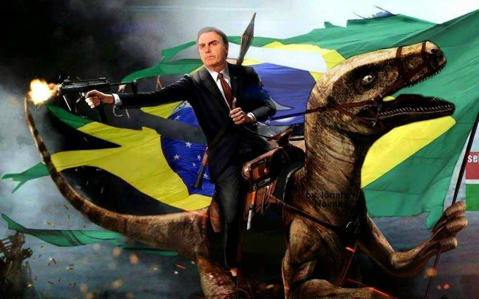

Jair Messias Bolsonaro foi o 38° presidente brasileiro. Nascido no dia 21 de março de 1955 em Glicério, interior de São Paulo,
atualmente com 70 anos. Foi eleito nas eleições de 2018, assumiu em 2019 e deixou o cargo em 2023, após perder a eleição para
seu adversário Luiz Inácio Lula da Silva. Jair, antes de se tornar deputado federal pelo Rio de Janeiro, era militar. Em sua atuação
política, adotou um discurso conservador, trazendo elementos como a "família tradicional" e a "religiosidade". Tornou-se um ícone
da direita brasileira por conta de seus discursos ácidos e caros a esta população. Por outro lado, Bolsonaro era visto como
extremista e até mesmo preconceituoso por parte da esquerda.
No dia 21 de março de 1955, Bolsonaro nasceu em Glicério, sua cidade natal. Filho de imigrantes italianos, Jair era o 3° irmão
dos 6 filhos do casal. Bolsonaro e sua família passaram por diversas cidades durante sua infância. Mas foi em 1966 que Bolsonaro
e sua família se mudaram para Registro, interior de São Paulo, onde permaneceu durante toda a adolescência.
Para ganhar dinheiro, Jair pescava e colhia palmito. Dali surgiu seu icônico apelido "mito", por conta de "palmito", que mais tarde
se tornou apenas "mito". Lá mesmo em Registro, Messias completou seu ensino médio e começou a se interessar pela carreira militar.
Em 1973, Bolsonaro prestou a EsPCEx, concurso para ser aprovado na academia militar das Agulhas Negras, famosa AMAN. Então se mudou
para Resende, no estado do Rio de Janeiro. Jair se especializou em paraquedismo e, após isso, finalizou seu curso em 1977. Depois
do término do curso, ingressou no Exército Brasileiro e serviu até o início de sua vida como homem público. Importante mencionar que
foi durante este período que seus dois primeiros filhos nasceram, Carlos e Flávio, frutos do relacionamento de Bolsonaro com Rogéria.
No ano de 1988, Jair se candidatou e conquistou seu primeiro cargo público, o de vereador da cidade do Rio de Janeiro. Bolsonaro entrou
na política por acaso, pois seu objetivo ao se candidatar era fugir de alguns superiores que o perseguiam por conta de denúncias feitas
por ele na época do Exército. Tanto que revelou que ainda queria voltar para a carreira militar, o que não aconteceu. Contando com
apoio entre os militares, Jair ganhou seu cargo de vereador e assumiu em 1989, candidato pelo partido Democracia Cristã. Durante este
mandato, Bolsonaro demonstrou valores conservadores e teve um forte corporativismo, apoiando e criando projetos que beneficiassem
os militares.
Após seu mandato de vereador, Bolsonaro concorreu ao cargo de deputado federal e ganhou. Foram 7 mandatos consecutivos vencidos por Bolsonaro.
Durante este período, Bolsonaro trocou de partido algumas vezes. Segue a lista de partidos:
Foram 34 anos se reelegendo consecutivamente, até perder sua primeira eleição, que foi a eleição para a presidência em 2022. Em todos
os seus mandatos de deputado federal, com exceção do último, foram mandatos apagados, com Bolsonaro adotando uma postura corporativista,
passando projetos de lei que beneficiavam seus eleitores, servidores públicos do Rio de Janeiro, como PMs e militares. Além do corporativismo,
os primeiros mandatos de Bolsonaro foram marcados pelas falas desbocadas que ele dava à imprensa e a inimigos políticos. Falas estas
que mais tarde seriam resgatadas e responsáveis pelo sucesso de Bolsonaro.
O ano era 2014 e Dilma Vana Rousseff havia sido reeleita presidente da República. Esta foi a primeira eleição ultrpolarizada, como as que temos
hoje em dia, metade da população estava furiosa com Dilma. Bolsonaro se popularizou muito nesta eleição por conta daquelas entrevistas
e pronunciamentos desbocados do passado, passando assim do 11° deputado mais votado em 2010, para o 1° em 2014. Neste período também começaram
a aparecer os primeiros memes de Bolsonaro como um "mito". Nestes vídeos, os internautas colocavam Bolsonaro dando respostas firmes a jornalistas
e outros inimigos políticos. Um exemplo deste tipo de vídeo é aquele em que Bolsonaro responde Maria do Rosário, deputada pelo PT. Por causa dos memes
e do seu aumento de votação, Bolsonaro passou de um deputado qualquer corporativista do Rio de Janeiro para uma importante liderança
da direita brasileira. Nesta mesma eleição, Bolsonaro se ofereceu como vice de Alckmin, que negou, o que mais tarde seria sua ruína.
bolsonaro,bolsonaro,trump,elon musk, bolsonaro,bolsonaro,israel,eua,brasil,trump,bolsonaro